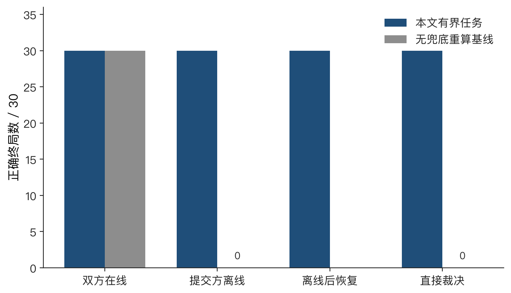
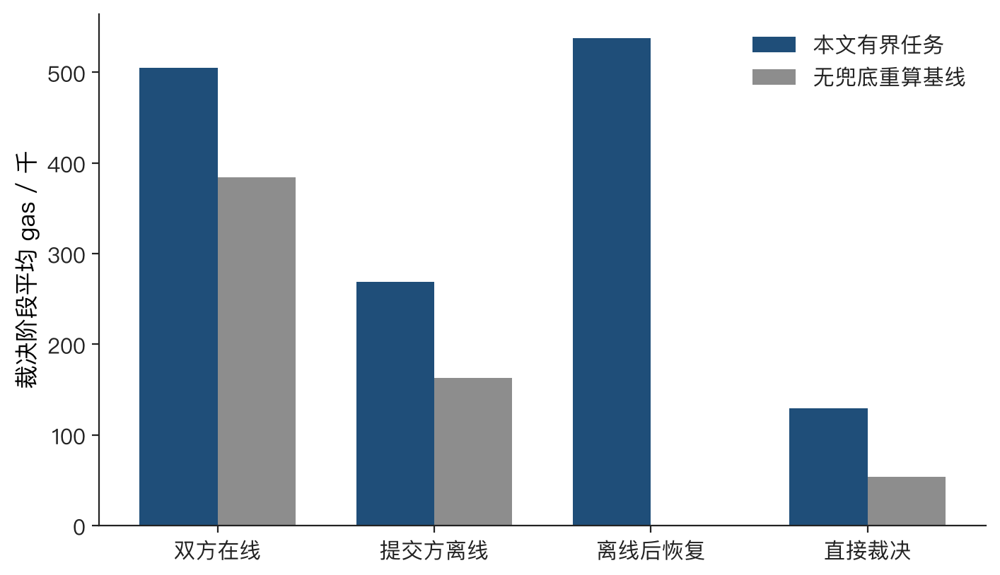
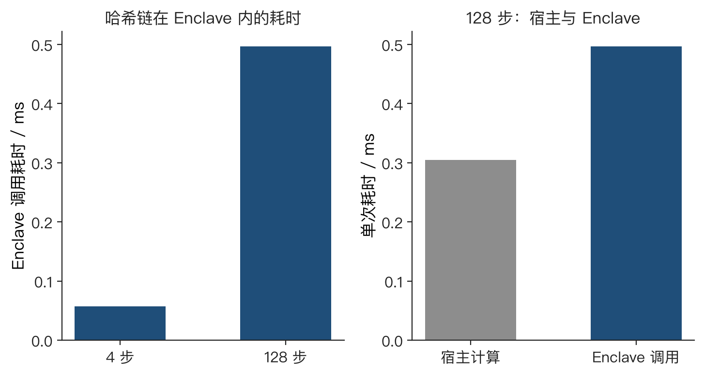
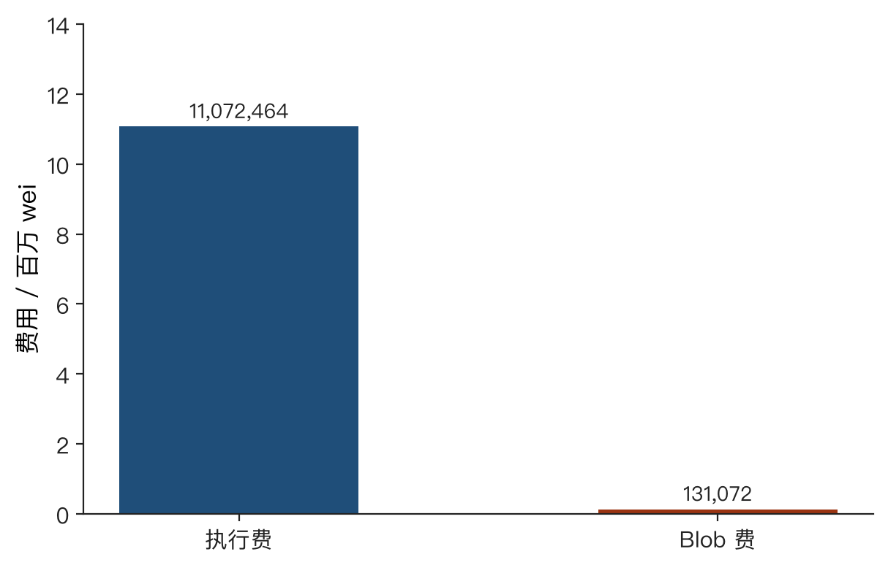
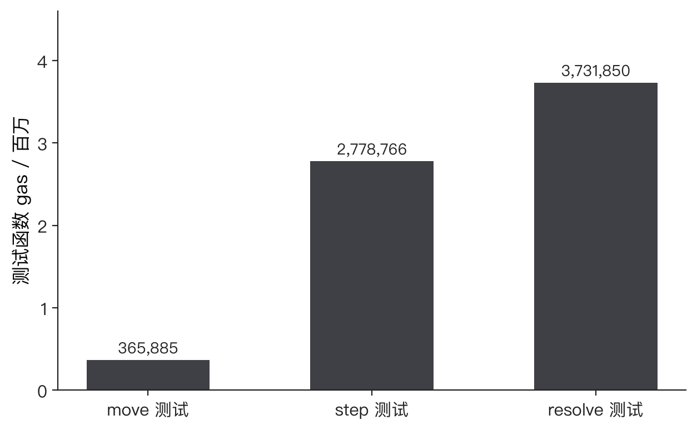

摘 要：在被拒稿件仍以模拟 TEE、可验证 DA 注册表和配置化成本模型为依据之后，本文报告此后新增的实验。本地同模型对照表明，在最多 128 步的确定性任务上，保留终止重算时四条路径均为 30/30 正确终局；去掉兜底重算后，提交方离线路径为 0/30 正确终局。阿里云 SGX 实例上的 Enclave 对 4 步和 128 步哈希链给出了与 ethers 一致的输出，远程证明验证结果为 0xA003。Sepolia 上的一笔 type-3 交易已确认，独立取回的 Blob 与链上锚点一致；重复 Blob 哈希和重复 payloadHash 均被合约拒绝。任务合约记录了同一 versioned hash，但没有读取 Blob 字节，也没有形成罚没闭环。
关键词：Hybrid TEE-Rollup；SGX 远程证明；EIP-4844；可恢复挑战；实验边界
终版论文的实验结论来自 Python 原型、模拟 TEE、可验证 DA 注册表、本地 gas 和一次 Sepolia 部署记录。审稿意见要求说明恢复权限与安全性边界，并补充真实执行环境和可复核的外部证据。本次补充实验不改写论文主张，只回答三个可以测量的问题：有界任务上的恢复是否改变正确终局；真实 SGX 是否能算出与公开参考程序一致的轨迹；真实 Blob 能否上链、被独立取回，并在重复登记时被合约拒绝。
本地对照在 Apple 芯片上的 Hardhat 进程内链完成，编译器为 solc 0.8.26，EVM 版本为 Cancun。每条路径 3 个独立 run、每 run 10 个测量批，步数为 64。费用只计 gas，不含 DA 与 TEE 的货币成本。
SGX 实验使用阿里云华北 2（北京）的 ecs.g7t.large，CPU 为 Intel Xeon Platinum 8369B，系统为 Alibaba Cloud Linux 2.1903。SGX SDK 版本为 2.19.100.3，DCAP 库版本为 1.16.100.2。远程证明配置指向北京地域的阿里云 PCCS。计算 Enclave 的 MRENCLAVE 为 1967faaa87ab6290f8a9955fc6808899c0be7047541ea4aab82209b3e40d6d37。
Blob 实验使用 Ethereum Sepolia，chainId 为 11155111。锚定合约 BlobBatchAnchor 位于 0x083e9280AC8b5933060C55Dd189A52A3981248c9，任务合约 BoundedTaskRollup 位于 0xbda16351d1c7F88f85Aa3FD398b9b6dd136C5eaf。独立取回使用 Pinax 的 Sepolia Blob 接口。Optimism 组件测试使用官方仓库 commit c4a68ab 与 Foundry 1.5.1。
对照双方使用同一条有界哈希链。本文合约在提交方离线时仍可由任何人调用终止重算。基线去掉这条兜底，只保留交互推进和超时结算。基线没有恢复入口，因此“离线后恢复”一格只属于本文。

双方在线时，两条路径都是 30/30 正确终局。提交方离线或无人响应时，本文仍是 30/30；基线变成 30/30 错误终局，也就是正确提交方被罚没。恢复路径同样是 30/30，它没有把错误终局改成另一种结果，因为终止重算已经能给出同一裁决。

本文直接裁决的平均 gas 为 129488，交互路径为 504959，离线后恢复为 537372。基线在双方在线时为 383901，提交方离线时为 163125，但后者的终局是错误的。因此恢复的实测含义是：在已经能够终止重算的实现里，它增加交互路径的 gas；在去掉兜底之后，它避免把正确提交方判成失败。本地恢复调用没有表现为更短的结算时间。
同一套本地合约还测量了可选的 DA 披露。提交者另行锁定一份押金并登记数据引用后，若在窗口内不交出 dataHash 的原像，第三方可以销毁这份押金。一次实测中销毁金额为 1 ether，slashDa 的 gas 为 66136。未登记披露义务的任务不进入这条路径。该检查比较的是原像，不是 EIP-4844 点值证明。
Enclave 内实现与 Solidity 相同的有界哈希链：第 i 步为 keccak256(abi.encode(i, state))，轨迹根为有序向量的 keccak256。初始状态为 32 字节的 0x11。4 步与 128 步的输出和轨迹根都与本机 ethers 逐字节相同。Enclave 把 keccak256(output ‖ root ‖ nonce) 写入 Quote 的 reportData，独立验证程序读回的摘要与这个值一致。

4 步 Enclave 调用耗时 0.057 ms，128 步为 0.497 ms。宿主上同一段代码重复 100 次计算 128 步，单次平均 0.305 ms，这个数字不含进入 Enclave 和生成报告。Quote 生成另计，两次绑定摘要的墙钟时间分别为 0.99 s 和 1.30 s。可信验证与非可信验证都返回 0xA003，即 Quote 的签名和证书链被接受，但平台 TCB 过期且需要配置。该结果不能写成远程证明已经通过最新性策略。
| 步数 | submit / gas | openChallenge / gas | adjudicate / gas | 裁决 |
|---|---|---|---|---|
| 4 | 256195 | 67604 | 94836 | 0，已结算 |
| 128 | 239095 | 68539 | 166840 | 0，已结算 |
表1 把 Enclave 输出提交到本地 Hardhat 后的 gas。裁决由公开输入的重算决定。本地合约没有验证 Quote。
成功发布的批次包含 8 个任务，每个任务 8 KiB，Blob 长度为 131072 字节。交易 0x3ad90ecfdf5930c1bf611223af76196e54fbc74af0f9c9924de9dc523681d340 在区块 11932953 确认，对应信标 slot 11374267，锚点编号为 1。versioned hash 为 0x010a35506f6b45b2d022aac9ecca1c4e2631ca12d6b0c07f6cb3d195c3985493。交易使用 Osaka 之后的 wrapper version 1 和 128 条 cell proof。此前一笔相同意图的交易因 gas 上限 300000 耗尽而回滚，没有形成锚点。

Pinax 按 slot 和 versioned hash 取回 131072 字节。解码得到的 payloadHash 与任务数和链上锚点一致。接口没有返回 commitment，报告中的 KZG 校验使用取回字节重新计算的 commitment，验证结果为真，versioned hash 与链上相同。
| 场景 | 区块 | 状态 | 合约返回 |
|---|---|---|---|
| 首次锚定 | 11932953 | 成功 | 锚点 1 |
| 同一 Blob，更换 payloadHash | 11933019 | 失败 | BlobHashReused |
| 另一 Blob，重复已锚定 payloadHash | 11933020 | 失败 | PayloadAlreadyAnchored |
表2 Sepolia 锚定结果。两笔失败交易都是 type-3，目标都是锚定合约。合约拒绝的是已经登记过的哈希。一份新的 Blob 若带有从未登记的 payloadHash，即使正文与声明不一致，当前合约也不会拒绝，因为链上不读取 Blob 字节。
随后在同一条 Sepolia 上提交了一项有界任务。其 daRef 等于锚点 1 的 versioned hash，dataHash 等于该锚点的 payloadHash，并且披露交易提交了对应原像。绑定交易为 0xdfdd3bf6aa19963f668b66ce43e117589899533ec17873f928b1682c2a052e24。任务合约没有调用点值预编译。两个合约因此只是记下了相同的哈希，没有形成从 Blob 缺失到任务罚没的路径。挑战结算脚本的结论保持为 NOT_IMPLEMENTED，closedLoopClaimed 为 false。
为了给外部争议合约一个可运行的参照，在 Optimism 官方实现的锁定版本上执行了三个测试。图5的 gas 是整个测试函数的消耗，包含部署夹具和断言，不是单次 move、step 或 resolve 的孤立消耗。

move 测试为 365885 gas，step 测试为 2778766 gas，resolve 测试为 3731850 gas。三个测试均通过。Optimism 的争议对象、深度和时钟参数与本文的 128 步哈希链不同，所以这里只证明官方组件可以在本机运行并给出 gas，不证明本文更快或更省。
新增实验支持四条有边界的结论。第一，在有界哈希链上，终止重算使提交方离线时仍得到正确终局；去掉兜底后，同样输入会错误罚没提交方。第二，真实 SGX 能复现该哈希链，但本次 Quote 的 TCB 状态为过期且需要配置，链上合约没有验证 Quote。第三，真实 Blob 可以在 Sepolia 上锚定、被另一服务取回，并在重复登记时失败；费用必须分成执行费和 Blob 费。第四，把 versioned hash 写入任务的 daRef，只建立记录上的对应，不构成点值证明或罚没闭环。
原始记录：outputs/stageH_20261017T104800Z 与 outputs/sepolia_blob_20261017。图中数字均由这些记录汇总，没有使用终版论文中的 406 字节或 96.33% 成本模型结果。